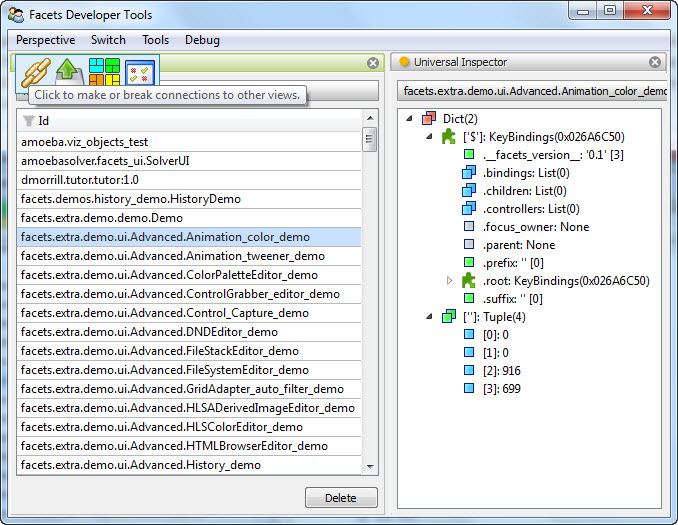

The Facets tool framework is both an architecture and an extensible collection of Facets classes called tools. When used within the context of the tool framework, the tool classes create a rich graphical equivalent to the well known *nix shell pipe which allows creating powerful command line tools by stringing commands together with the output of one acting as input to the next.
The Facets tool framework equivalent to the *nix shell pipe consists of a graphical view called a perspective which allows tools to be added from a menu and then laid out using standard window docking and splitter bar controls. Tools can be connected together and operated on in various ways using the feature toolbar that appears when the mouse is hovered over a tool’s tab. A sample perspective is shown in the following figure:
This example shows a perspective containing an instance of the FacetDB and UniversalInspector tools with the mouse pointer hovering over the feature toolbar for the FacetDB tool.
The tool framework can be divided into three main sections:
You can also get a quick introduction to using the tool framework to create a custom tool by watching this video: